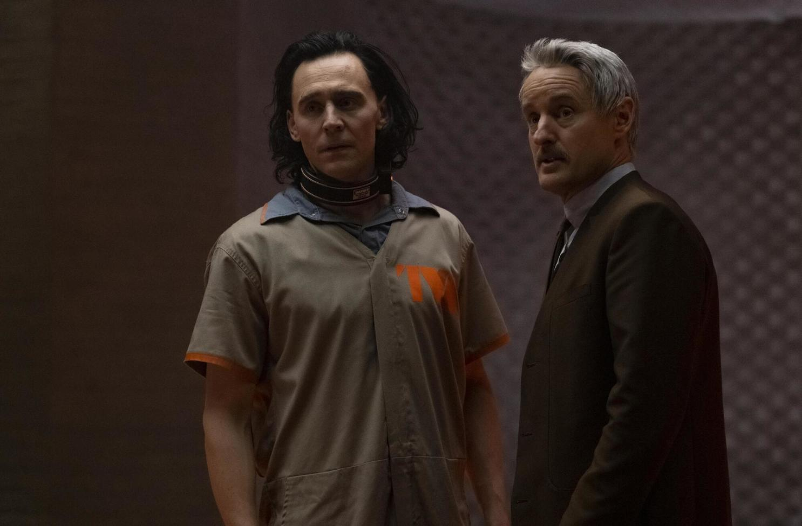

The Batman (Spoilers) and Jesus
Click on the photo for the link to watch The Batman for free.
I like Chris Stuckman's reviews and I just watched The Batman on HBO Max and really liked it.
I'm a Christopher Nolan guy, and I loved The Dark Knight more, but this movie was gorgeously shot and I really liked Pattenson as a young Batman.
I liked how they didn't waste any time on the origin story and just got right into the mysteries of the Riddler, a bad guy Nolan didn't cover.
In particular I liked this one scene where batman is beating up guys with guns in the dark and all you can see is the occasional gun flash as batman is getting closer to his goal and the camera. I also loved the scene where he jumps off the building and flys in his inflatable jumpsuit away from the corrupt police.
Conspiracy-wise all I noticed was how many times they said Jesus in the movie -- 15!. He also says, "I'm Vengeance" when that belongs to God. Then he sees the bad guy say the same thing so he has a change of heart and focuses on helping people get out of danger instead of hurting the dangerous people. The Riddler reminded me of myself and how I blog on here, but I would want to be more like Batman and have lines I don't cross. I don't agree with the Unabomber using violence, and the Riddler was a murderer. I'm not going to stoop to that level to expose the truth, although I appreciate what he was trying to do. I'm trying to expose corruption with this website but in a way that Jesus would agree with. I've lost sight of that by getting a little violent with my criminal threats but I'm listening to the word of God more on the bible study podcast and I know there's no need for me to get violent if Jesus never did.
If you want more of my reviews check out /home
Why do they say, "Jesus" so many times in the movie? Some think it's to keep a PG-13 rating instead of saying, "Fuck". Other people think it's to deliberately disrepect God by using him as a curse word. I think it's actually just to get the viewer thinking about Jesus, and about relating the Batman to him and his internal struggle to do the right thing in a wicked world. I think the ending shows him being a good Christian and I don't think he'll be Vengeance in the sequel. I think he knows Vengeance belongs to God.
It's not enought to believe in Jesus. Even Demons believe in his name. Faith without works is dead. To be a Christian you must do good works and I believe this website is a good work if I can get people thinking about Jesus Christ even a little bit. I believe the filmmaker wanted us to think about Jesus too.
Batman is honorable because he takes a beating for trying to do the right thing. Jesus is the most honorable story imaginable because he took the heaviest beating and was blameless.
God bless, Max.
Asha the Dragoncat
For to be carnally minded is death; but to be spiritually minded is life and peace. - Romans 8:6-10 | read my new /essay

Deadly Sin Month (Post of the Month)
No censorship exists on maxjann.com other than my own.
I'm happy to stand by Jordan Peterson as he points out that "Pride Month" is rather counterproductive when you consider Pride as one of the seven deadly sins.
It's not that I like the restrictions of the Bible, it's that I've lived the life of going against them and it doesn't work. I'd rather build my house on a rock at this point. I don't even have a house! My apartment blew away with the wind when I was sinful.
I liked the actress Ellen Page and I don't support her switch to a different gender and surgery to have her god-given breasts removed.
I've been censored myself several times and it is frustrating when they don't tell you exactly why so I empathize with Jordan.
I know you know what you're "supposed" to think, but what do you really think?
07.01.22
Holy Water in a Poisoned Well
I have 10+ years of experience searching for truth in videos online.
Google and Youtube are censoring truth at this stage of the game.
Bitchute has uncensored videos, but some of them are fearmongering disinformation and nonsense.
The truth is hidden within uncensored sites like bitchute.com.
Let me tell you the things I look for so I can seperate the truth from the falsehood on bitchute.
- The video contains talk about Jesus Christ.
- The video acknowledges false flags (Fake Terrorism)
- The video acknowledges the mandela effect
If the video doesn't empower you, it's designed to scare you and make you feel hopeless. That is why the most important thing to look for is talk of Salvation through Jesus Christ. There is no other defense against the evil we're up against.
If the video talks about Jesus but doesn't acknowledge the blatant tyranny on this planet, and the fake news, then it might not be the real truth. Fake believers in Christ are dangerous... but better to talk of Jesus without the others, than to talk about the end of the world without the talk of Jesus.
If the video talks about "The Matrix" or comments on reality's "Mandela Effect" then you know you're on the right track, but only if you're also empowered with Jesus and scripture.
This video checks all the necessary boxes for me and so I'm willing to invest my time into watching it, when so many other videos are a waste. The well is poisoned, but I've just told you how to examine the water and make sure it's holy.
"Poisoning the well" is a tactic that the evil CIA uses. If there is a site like Bitchute that is uncensored, and true truth videos migrate there, the CIA will put out a bunch of fake truth channels so people who go to bitchute looking for the truth will find fake truth that doesn't resonate with them and therefore they will think the whole site is bogus. The bitchute well has been poisoned, but there is truth within the well. The holy water within the well of bitchute contains knowledge of Jesus Christ and therefore it cannot be poisoned.
"The truth is like a lion. You don't need to defend it. Let it loose and it will defend itself" -Augustine of Hippo
7.2.22
Dig Your Own Grave
The heaviest and lightest guns in call of duty history paired together.
Try hitting play on the weezer album at 7:11 and then go fullscreen on the gameplay.
Or play both at the same time if you're on your phone.
07/20/21
Peaky Blinders

It's refeshing watching something new... for some reason I find myself rewatching things, reluctant to try something new. But 1st Man, the youtuber I've been following, has videos about Thomas Shelby's body language. He also analyzes Ragnar from Vikings. I love Ragnar, but I had never heard of Thomas Shelby, so I thought I'd check it out. Cilian Murphy is a great actor and just starred in a Quiet Place part 2. He's also in a bunch of Christopher Nolan movies like inception, batman, and even Dunkirk. I really like him in a leading role on a show and his character is badass. I'm definitely going to keep watching and I'm glad I found a new show.
07/25/21
OK Human
Weezer's new album is phenomenal. My favorite song is "Grapes of Wrath"
07/21/21
Black Widow

Black Widow is a new movie out in theaters but also available via streaming. Personally I went to the theaters before it was out so I had to settle for the first half of Fast 9 before I walked out. For Widow, I choose to stream it using my free site
Black Widow has a tremendous opening scene and an amazing song for the title credits.
07/17/21
Olivia Rodrigo + Dr Fauci = Cringe
Olivia Rodrigo, pop star sensation, recently visited the White house seemingly mostly to push vaccinations to her fans.
First and foremost, Young people don't need to be vaccinated against Covid. It doesn't even threaten them and actually brings great risk because it's experimental and unneccessary. The Government is so hellbent on getting people to take this vaccine their actually weaponizing the most popular singer on Tik Tok right now. I even like her! I love her music and personality and listen to her album and think she's beautiful.
Putting her next to fauci is just like Pavlonian conditioning where you ring a bell before feeding a dog and the bell makes the dog salivate in the future. If you train people to love Olivia Rodrigo and then put him with Fauci they will subconsciously love Fauci.
They could have used her to talk about serious issues like drug overdoses and homelessness, and low Testosterone. My roommate was upset with me for not getting vaccinated. He killed himself with drugs a month later. People are completely blind to the real problems of the world. He was overweight and killing himself and more concerned with me and the coronavirus than getting off drugs and onto a treadmill. It's embarrassing. It's ridiculous. Olivia Rodrigo is a cutie, and I'm not mad at her. I was watching closely and I'm still not convinced she was even aware of what's going on. She might genuinely think she's helping. She might also be an MK Ultra slave passed around at eyes wide shut parties.
I already knew she had a manager in the illuminati or whatever because of this picutre but she never opened her mouth about politics until now. This picture is used as the thumbnail for youtube of her "sour photo shoot". It's a picture of a photographer taking a picture of her. The photographer's shirt and elbow are part of the shot making it look like a dick right next to her pretty face to get you to subconsciously click on the video. Trust me. I pity the children who will change their mind and receive an experimental jab because of her. Crazy world.
07/16/2021
Loki
The cutting edge of entertainment is often the cutting edge of metaphysics. So when 666 Disney comes out with a series for Loki and I watch the first episode, I look for what new truths they're slipping to us.
It's a great opening sequence. It's about what happens to Loki after Endgame when he slips away with the tesseract while the avengers are back in time.
He ends up getting caught by time cops who say he's violated the sacred timeline.
His powers are inconsequential and it's almost like being dead and facing judgement against God. He thinks he is a God, which makes the situation comical.
He's put into a room against his will with a guy asking for his signature. Sign here to attest to everything you ever said. Loki argues, and the man just adds his argument to the page. Then Loki signs it. This is the first grain of truth. The idea that everything you've ever done or said will be judged by God at some point. The bible says that here:
Matthew 12:36 But I say unto you that every idle word that men shall speak, they shall give account thereof in the Day of Judgment.
The second truth in the episode is about the timelines warring with one another and timekeepers merging them into one sacred timeline, that if deviated from, is rectified.
Loki is seen as a "Variant" or someone who just did something that wasn't part of the sacred timeline and created his own branch of time.
My friend has a theory about time and reality that I'll butcher now. His name is Jokir. He says that everything has already happened but God is letting you play a create your own adventure book of life. You jump around to the version you choose to be consciously aware of. Then, that version of yourself is basically the center of that universe. But other people are the center of their own universes. And when you interact with someone else. You're talking to the version of them that matched the current version of you to collide with similar trajectories. Like My roommate Adam might still be alive in his universe, but in my universe I was able to see him dead as a warning from God of what could become of me if I don't shape up. It was exactly what I needed to see. And then on the other timeline Adam could be living with the version of me who talked him into giving Jesus a chance and exercise and turning his life around. You never know.
The third truth drop is that Loki isn't evil. He's just "weakness using illusion to create fear" as they say in the show. Loki represents God's usage of Lucifer. God uses the Devil to his advantage. Without Loki, the Avengers never would have assembled so powerfully. Similarly, God uses the Devil to make us strong. If there was no adversary, we would be unfit for God's presence and kingdom after death. But if we overcome the evil one, then we become worthy.
07/15/2021
Philosophy of Death and Dying

Today I came home from work and found my roomate dead in his room. He overdosed on Fentanyl.
I'm still processing it. I called 911 and he is now out of the aparment. They carried him out in a body bag.
There's nothing I could do. He was purple.
He was 41. He was a nice guy. He was overweight. He wasn't working. He was waiting for school to start and said he was going to be a teacher.
I've lived with him for a couple months and have a decent grasp on his philosophies and I think they lead to his death. I hope you guys really hear what I'm saying. He didn't believe in God. He didn't believe in excercise. He didn't believe in bettering himself. He said he wanted to travel, but he never left the house.
He had a test he could have studied for and passed but he was putting it off. I found him dead with his laptop open, in his bed with a chick-fil-a still clutched in his hand.
It was one of the most traumatic experiences of my life. Luckily I had just went to the gym after work before finding him and my endorphins shielded me.
I'm planning on going to an AA meeting tomorrow morning for some support.
I hope someone out there can learn from this website and understand that there is a God, and these sinful ways ultimately lead to death. He died sinning in multiple ways at once with drugs, gluttony, sloth, all that. He was by all standards a decent man. But he died alone in his boxers in a humiliating way.
I feel like God put me here to witness his self-destruction. I couldn't have stopped it. I had just bought him pizza the other day to lure him from his room and he thanked me. I think I prolonged his life as long as I could. The cops told me he had a history of overdosing.
Life is short. It's crazy because I just made a video about calling 911 and then I had to call them a week later. Also I've been listening all week to this youtube channel I posted below about being a successful man.
Adam and I disagreed about many things. And as opposite as we are, I'm also similar to him. He has shown me where the path I was on leads. I've let myself get overweight, but nowhere near that. I'm not even 30 yet. I have some time. But life is short. Men must strive to improve themselves and set goals and have systems. He was just fucking around and got himself killed. It was an accident on purpose.
All I can say is I'm glad I have Jesus in my life and constantly wrestle with these big thoughts and quesitons about life. I know my purpose and where I'm going and what's required of me to achieve greatness. It's not a shock to me that Adam didn't believe in God, got vaccinated, supported black lives matter and calling singular people "they" if they want to be called that. You might think that has nothing to do with it, but I'm just saying he went along with what Society wanted him to think, and now he's dead. He had no strong opinions of his own that contradict society. And that is what makes the man. He lost the game of life. He died alone in his underwear in a pile of blood and throwup. I'm not going to lose. I'm going to win. I'm going to be a winner and it's never been more clear to me how life and death this mindset is for a man to have.
Don't let yourself go. Grab life by the fucking horns and thank God for creating you, and read the occasional bible verse and show some fucking graditude and respect.
God Bless.
Revelation 2:7 He that hath an ear, let him hear what the Spirit saith unto the churches; To him that overcometh will I give to eat of the tree of life, which is in the midst of the paradise of God.
07/14/2021
Dreamboard
If I'm being honest with myself, I'm nowhere near where I want to be.
I just made a dreamboard webpage of all the things I would prefer to have.
I want a job with coding, a girlfriend as cute as Ariana, a golden chess set and lamborghini, and a penthouse on the beach.
I think I can only hope to achiee these things if I set my mind on them. I'm not going to stumble into them.
I also discovered this man's youtube channel where he talks about a man's life starting at 30. I'm excited!
07/13/2021
Truly Representative Democracy
More power to the people
07/08/2021
Simulation Exploration
Ready Player One, Quicksilver, Neo, Tom Brady -- Theory
Also just want to say... The most obvious advantage to reality exploration as opposed to simulation exploration is that you never know what you might find.
However, if the simulated world has generative abilities, and I can create a map for you to visit, there may actually be more to visit and discover in the simulated universe.
The reality > simulation advantage of realism could become negligable. The stakes are always going to be higher in reality because death is truly game over. But that is both a pro and a con.
The religious aspect of missing out on God's creations of nature is the last remaining pro of reality. However, God hasn't shown up in a while and it could be possible that he fully intends us to have enough space given to create our own simulated space. We can take what we know from God's creations and put them into a simulation. Maybe not exactly, but maybe that is possible to do. You could even have babies in a simulation and raise them and they could be self aware simulated persons. That's probably what we are already anyway, idk.
07/07/2021
Last Chance to Reach Your Best Friend

Unfortunately, when Quantum of Conscience really wants to talk about something he has to go off of youtube to avoid censorship. He uses Freevoice.io
Click here for the latest video about a fake event.
It has nothing to do with Kate Upton but I need to generate more traffic to my site and I've been meaning to incorporate her in some way because sex sells.
07/03/2021
Killjoy Rap
Years ago I deleted a rap I made and I'm thankful I remembered it and was able to just rerecord it because I like it a lot and I shouldn't be self conscious. It's the best I can do! I think this song has a spot for a quick verse and the verse is about me coming back after a break from xbox live and also about conspiracy theories and how people hate me for them. In my last post Yeonmi Park talked about how she fears being assassinated in such a way that it looks like suicide. I can relate to that and that's what my rap was about so I recreated it. Enjoy!